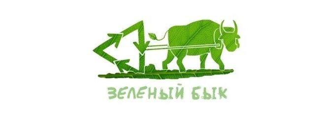

Сохранение, воспроизводство, совершенствование натуральной среды — вот чем занимаются природоохранные организации. Особое внимание они проявляют к антропогенному воздействию на природу и индустриальному загрязнению, как и к загрязнению вообще. Также внимание природоохранных организаций привлекают сохранение естественного разнообразия, контроль затрат, переработка отходов, глобальное изменение климата, озоновые дыры и генная инженерия.
«Зеленый Бык» — волонтерское движение, объединяющее всех, кому небезразлично будущее нашей планеты. Наша цель: популяризация экологической культуры, разумного потребления и ответственности за сохранение природных ресурсов. Мы проводим акции по раздельному сбору вторсырья от населения в Саратове и Энгельсе при поддержке компаний «Пакмил», «Отходы в доходы» и «Кварц». Мы против свалок и мусоросжигания. Мы ЗА сокращение потребления, раздельный сбор и вторичную переработку! Работа движения исключительно добровольческая. Волонтером может стать любой желающий, кому интересна идея раздельного сбора и бережного отношения к природе.
